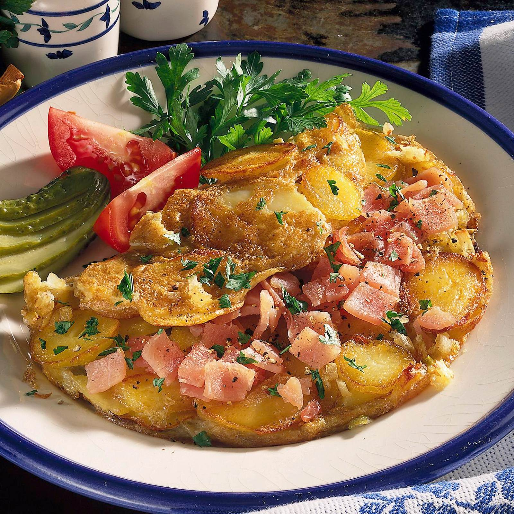

Bauernfrühstück is a traditional German dish that can be translated as a farmer’s breakfast. Although there are many variations throughout the country, it’s usually made with a combination of potatoes, butter or vegetable oil, onions, cured ham, eggs, milk, chives, salt, and pepper.
Meal prep time : 50 minutes
Servings : 2